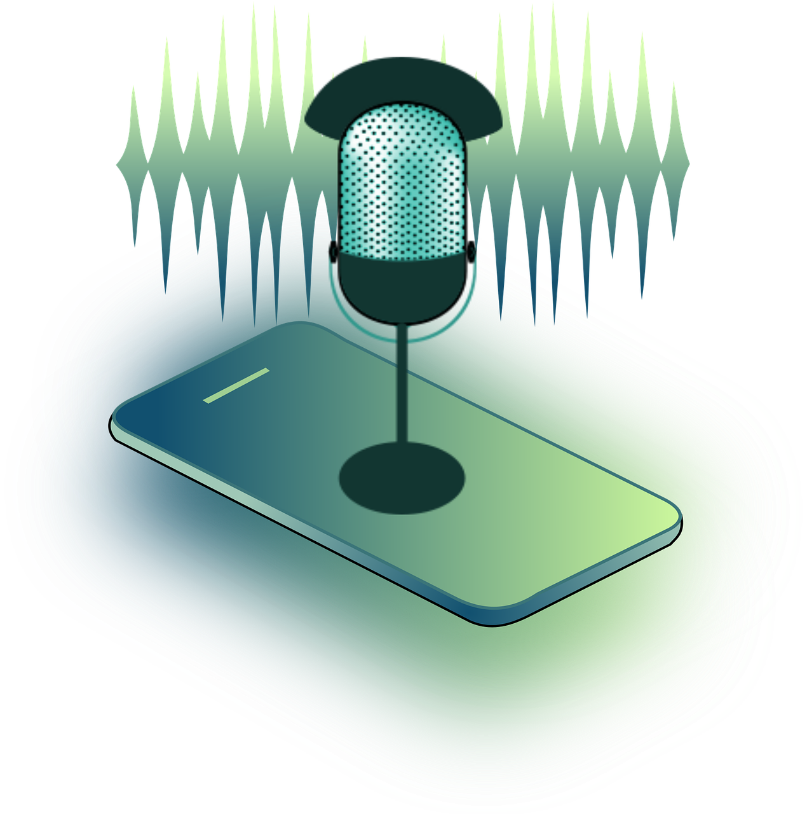

Beyond Keyboard and Mouse
The standard mouse-and-keyboard combination is not accessible to everyone. Users with severe motor disabilities, spinal cord injuries, amyotrophic lateral sclerosis (ALS), cerebral palsy, limb differences, or progressive neurological conditions may be unable to perform the fine motor movements required to use conventional input devices.
Alternative input methods allow these users to control a computer — and navigate the web — using the capabilities they do have. The design choices developers make directly determine whether these tools work effectively or fail entirely.

Voice Control and Speech Recognition
Speech recognition software translates spoken words into computer commands, mouse movements, and text input. It is the most widely adopted alternative input technology for users with upper-limb disabilities.
| Tool | Platform | Key features |
|---|---|---|
| Dragon NaturallySpeaking (Nuance) | Windows / Mac | Industry standard, high accuracy, extensive command vocabulary |
| Voice Control | macOS / iOS | Built-in, overlays element numbers for voice-clicking |
| Voice Access | Android | Built-in, displays element labels for targeting |
| Windows Speech Recognition / Voice Access | Windows | Built-in since Windows Vista; enhanced in Windows 11 |
How voice control targets elements
Voice control software like Dragon or macOS Voice Control relies on the accessible name of each interactive element to identify it. When a user says "Click Submit", the software looks for a button whose accessible name is "Submit". If the button's visible label reads "Submit" but its accessible name is computed differently (or is absent), the command fails.
WCAG 2.5.3 (Label in Name, Level A) requires that for components with text labels, the
accessible name contains the visible text. Never use aria-label to give an
element a completely different name from its visible label — voice users won't be able to
target it.
<!-- Bad: visible text "Send message" doesn't match aria-label "submit" -->
<button aria-label="submit">Send message</button>
<!-- / Good: aria-label extends the visible label (starts with "Send message") -->
<button aria-label="Send message to support team">Send message</button>
<!-- / Best: use visible text as the accessible name without aria-label -->
<button>Send message</button>Eye-Tracking Technology
Eye-tracking devices use infrared cameras to follow the user's gaze and translate it into cursor movements. Users can then trigger clicks by dwelling on a target for a set time, blinking, or using an external switch. Eye-tracking is used by people with severe motor disabilities including locked-in syndrome, advanced ALS, and high-level spinal cord injuries.
Key considerations for eye-tracking users:
- Target size: Small targets are extremely difficult to hit with gaze alone. WCAG 2.5.8 recommends a minimum of 24 × 24 CSS pixels; for eye-tracking users, 44 × 44 px or larger is strongly preferred.
- Target spacing: Closely packed interactive elements increase the risk of unintended activation. Provide at least 8 px of non-interactive space between adjacent targets.
- No hover-only actions: Eye-tracking triggers mouse events differently from
a physical mouse. Menus or tooltips that appear only on
:hovermay not be accessible to eye-tracking users who cannot sustain hover without triggering a click.
Switch Access
Switch access allows users to control a device with as little as a single physical switch — a large button, a sip-and-puff device (activated by breath), a foot pedal, or a head-mounted sensor. The device cycles through interface elements (a technique called "scanning") and the user activates the switch to select the highlighted item.
Because switch access relies on sequential focus traversal — essentially the same mechanism as keyboard navigation — well-implemented keyboard accessibility is the foundation of switch access support. The key additional requirement is predictable, uninterrupted scanning order.
If your interface is fully keyboard accessible with a logical tab order, visible focus indicators, and proper focus management in modals, it will work correctly with virtually all switch access devices. No additional code is required.
Head Pointers and Mouth Sticks
Head pointer software (such as Cameramouse or Camera Mouse) translates head movements into cursor movements, using a standard webcam. Users activate clicks by dwelling or via an external switch. Mouth sticks are physical tools held in the mouth to press keyboard keys or touch targets one at a time.
Both tools rely on the same design principles as eye-tracking: sufficiently large targets, adequate spacing, no reliance on simultaneous multi-key presses, and no time limits on interactions.
Designing for Alternative Input: Core Principles
1. Large, well-spaced targets
Every interactive element - links, buttons, form controls - should have a minimum touch / click target of 44 x 44 CSS pixels. This benefits mouse users, touch users, eye-tracking users, and head-pointer users alike.
2. Avoid pointer gesture dependence
WCAG 2.5.1 (Pointer Gestures, Level A) requires that all functionality achievable by multipoint or path-based gestures (e.g. pinch-to-zoom, swipe, drag) also has a single-pointer alternative (e.g. buttons). Multi-step gestures are impossible for many alternative input users.
3. No time limits on input
Alternative input is inherently slower than a mouse or keyboard. WCAG 2.2.1 (Timing Adjustable, Level A) requires that any time limits be adjustable, extendable, or removable. Never auto-advance a form step or close a modal after a fixed time.
4. Avoid motion-only activation
WCAG 2.5.4 (Motion Actuation, Level A) requires that functionality triggered by device or user motion (shaking, tilting, or gesturing at the device) also has a user interface control equivalent, so users who cannot perform the motion can still access the feature.
5. Visible labels on all controls
Icon-only buttons are problematic for voice control users who rely on visible text to issue
commands. Provide a visible text label alongside icons, or at minimum a
title attribute that appears as a tooltip and can serve as a voice target.
<!-- / Good: icon button with both visible text and clear accessible name -->
<button>
<svg aria-hidden="true" focusable="false">...</svg>
Send
</button>
<!-- / Acceptable: icon-only with aria-label matching what a user would say -->
<button aria-label="Send message">
<svg aria-hidden="true" focusable="false">...</svg>
</button>Testing with Alternative Input Tools
Testing your interface with real alternative input tools reveals issues that automated checks and keyboard-only testing cannot find. Here is a minimal testing approach:
- macOS Voice Control: Enable it in System Settings Accessibility Voice Control. Say "show numbers" to see numbered overlays for all interactive elements, then say "click [number]" to test activation.
- Dragon: Say the visible label of every button and link to verify that voice commands successfully target elements.
- Large pointer simulation: Increase the mouse cursor size to maximum in OS settings and use only large, deliberate movements to interact with the page. Elements that are hard to click precisely are too small.
- No mouse, no keyboard: Briefly try using only the Tab key to navigate (simulating switch scanning). Every interaction should be reachable in a reasonable number of key presses.
The most valuable testing involves real users who rely on alternative input daily. Consider engaging with disability organisations to recruit testers. Their experience will reveal workflow issues that no tool can simulate.